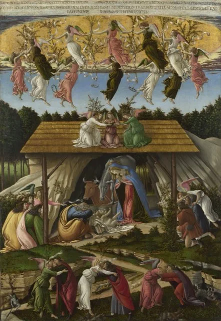
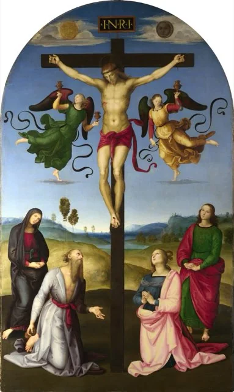
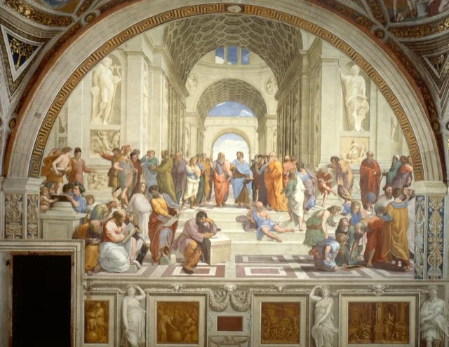
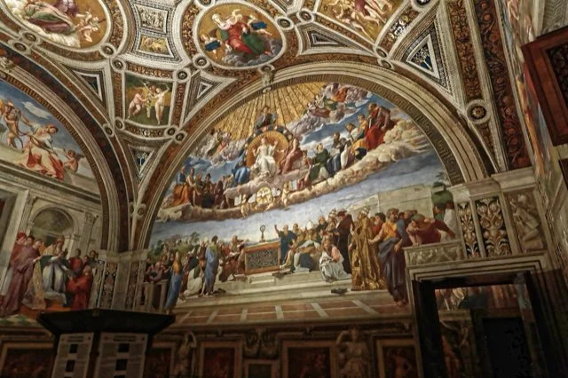
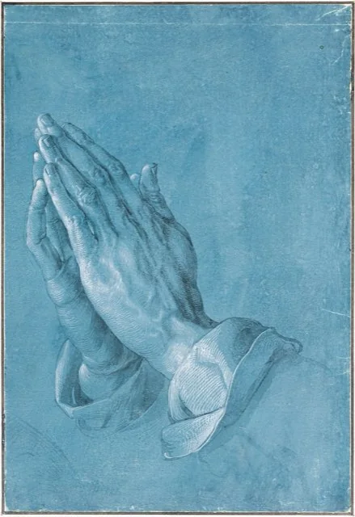
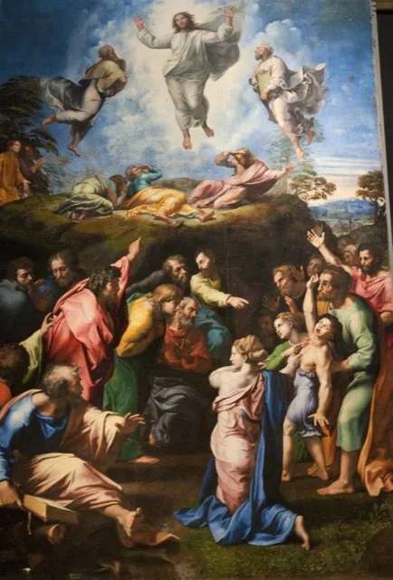

The Qur’an
4 writings-

AD 616Meccan period (c. AD 610–622)Qur’an, Surah 19 (Maryam): Mary
The Qur’an; tr. E. H. Palmer (1880)
The chapter named after Mary: Zachariah and John, the annunciation, the birth of Jesus beneath a palm tree, and the infant Jesus speaking from the cradle as ‘a servant of God’ and prophet. A 7th-century text, not an independent source for the nativity.
→ -
 AD 627Medinan period (c. AD 622–632)
AD 627Medinan period (c. AD 622–632)
Qur’an, Surah 3 (Al ʿImran): The Family of Imran
The Qur’an; tr. E. H. Palmer (1880)
The Qur’an’s longest account of Mary’s birth, Zachariah and John, and the annunciation of ‘the Messiah Jesus the son of Mary’, with his miracles ‘by God’s permission’. A 7th-century witness to the Islamic portrait of Jesus, not an independent source for his life.
→ -

AD 627Medinan period (c. AD 622–632)Qur’an, Surah 4 (An-Nisa): Women
The Qur’an; tr. E. H. Palmer (1880)
Contains the Qur’an’s only explicit statement on the crucifixion (4:157–158): ‘they did not kill him, and they did not crucify him’, but God raised him. Also 4:171, calling Jesus ‘the apostle of God and His Word’ and rejecting ‘Three’.
→ -
 AD 627Medinan period (c. AD 622–632)
AD 627Medinan period (c. AD 622–632)
Qur’an, Surah 5 (Al-Ma’idah): The Table
The Qur’an; tr. E. H. Palmer (1880)
Late Medinan surah named for the table Jesus’s disciples ask him to call down from heaven. It calls Jesus a prophet who brought the Gospel, rejects ‘God is the third of three’, and ends with Jesus denying that he told people to worship him and his mother.
→
The churches today
5 writings-

196528 October 1965Nostra aetate: The Church and Non-Christian Religions
Second Vatican Council
Vatican II’s declaration on other religions. It notes that Muslims revere Jesus as a prophet and honour Mary, and states that Christ’s passion cannot be charged against all Jews then living or Jews today. A modern reception, not historical evidence.
→ -

19921992 (definitive Latin edition 1997)Catechism of the Catholic Church, sections 464–469: True God and True Man
Catholic Church
The Catholic Catechism’s short statement that Jesus Christ is one divine person, ‘true God and true man’, in two natures, as defined by the councils from Nicaea to Chalcedon. A statement of faith, not historical evidence.
→ -
199411 November 1994
Common Christological Declaration of the Catholic Church and the Assyrian Church of the East (1994)
Pope John Paul II and Mar Dinkha IV
A joint statement in which the Catholic Church and the Assyrian Church of the East confess together that Christ is truly God and truly man, united in one person, ending a dispute over wording that went back to the Council of Ephesus in 431.
→ -

202424 October 2024Dilexit nos: Pope Francis on the Heart of Jesus
Pope Francis
Pope Francis’s 2024 encyclical on the human and divine love of the Heart of Jesus (the Sacred Heart), drawing on scripture, the Fathers and the visions of Margaret Mary Alacoque. Evidence of present-day teaching, not of first-century events.
→ -

202417 May 2024Norms for Discerning Alleged Supernatural Phenomena
Dicastery for the Doctrine of the Faith
The Vatican’s 2024 procedure for judging reported apparitions, visions and similar claims, many concerning Jesus or Mary. It sets graded conclusions instead of a yes-or-no verdict, and does not rule on any particular event.
→